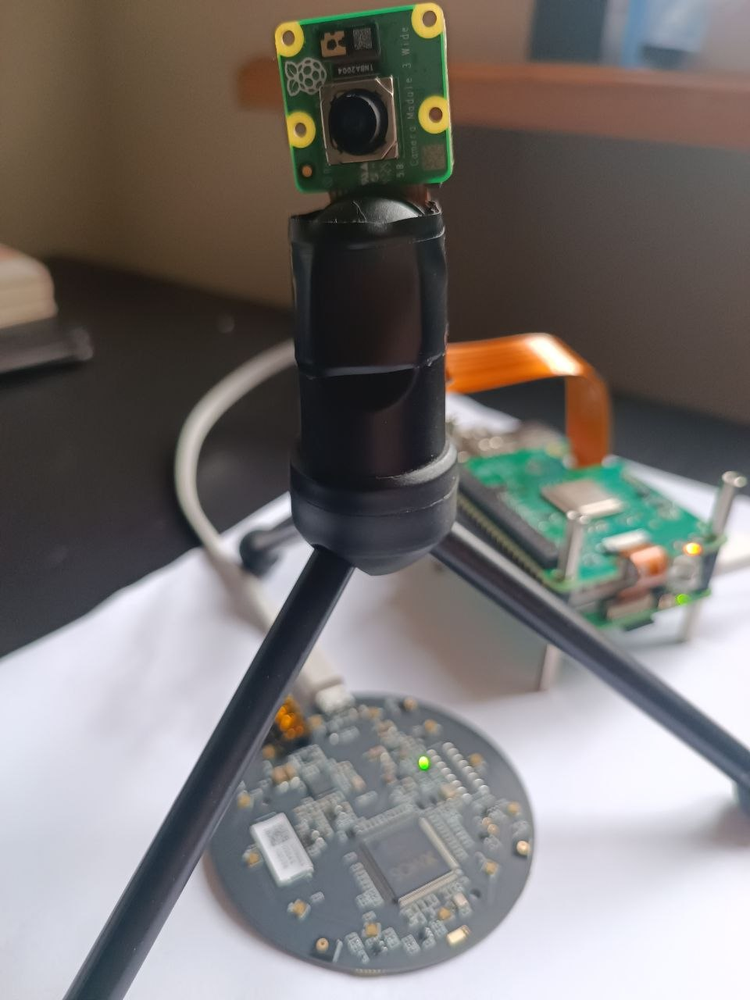
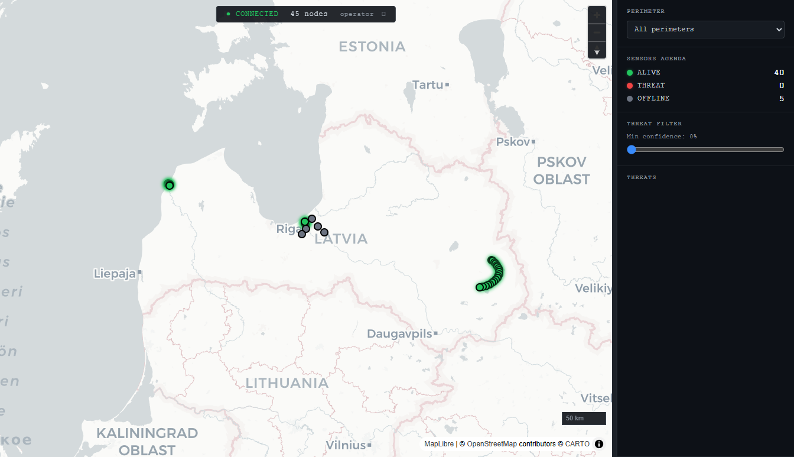
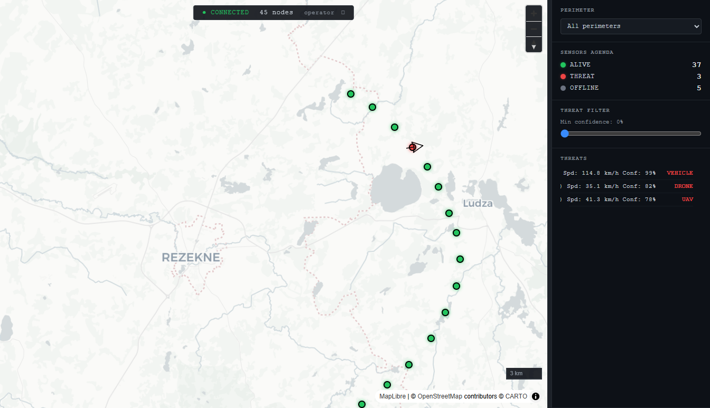
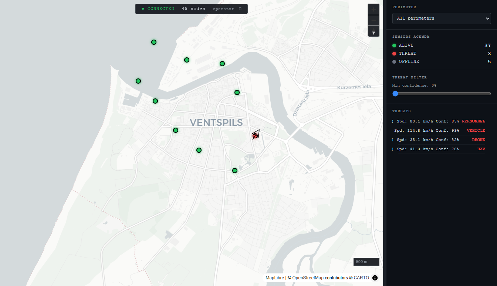

Passive Drone Detection Mesh Network
Onyx Grid is a decentralized infrastructure of smart sensor nodes designed to detect, track, and alert against unauthorized UAV activity in real-time. The fully deployed system operates as a passive, mesh-networked detection layer requiring no external cloud connectivity.
Emits no signals; undetectable to adversary RF analysis.
Sub-second local processing; zero cloud dependency.
Survives cellular/WiFi jamming; distributed redundancy.
Standard CoT/ATAK multicast; works with existing C2 systems.
Current Status: Component validation framework established. Multi-sensor integration pipeline configured for video and audio analysis. Edge computing architecture eliminates traditional bottlenecks in real-time signal processing.

Current Status: Fully functional MVP. Ingests sensor telemetry over mTLS MQTT, persists state to PostgreSQL, broadcasts tactical network information via CoT multicast (239.2.3.1:6969) and WebSocket streaming. Ready for configuration abstraction and cloud staging.
Mutual TLS (mTLS, TLS 1.3, port 8883) with Eclipse Mosquitto 2.0. Consumes node heartbeats and threat alerts; validates and clamps payloads (speed 0–150 km/h, azimuth 0–359°).
PostgreSQL 16 with Flyway migrations. Tracks node identity, geolocation, lifecycle state, threat events (classification, azimuth, confidence, speed), and geofenced perimeters.
Cursor-on-Target (CoT) XML multicast for ATAK integration. Real-time WebSocket streaming of node state and threat detections to authenticated console clients (JSON).
MapLibre GL JS with Protomaps PMTiles (offline-capable vector tiles). Real-time node markers (color-coded: green=ALIVE, gray=OFFLINE, red=THREAT). Directional threat arrows. Geofenced perimeter visualization.



Expand detection capabilities to radio frequency domain. Integrate SDR (Software Defined Radio) analysis into active MQTT telemetry bus for comprehensive drone signature coverage.
Enable peer-to-peer coordination between sensor nodes. Implement LoRa mesh for fully air-gapped, decentralized deployment. Eliminate single-point failure via redundant routing.
Develop and validate machine learning models for acoustic and visual drone signatures. Implement INT8 quantization targeting 13 TOPS Hailo-8L accelerator. Achieve <100ms inference latency on edge.
Design robust node enclosures with passive cooling and thermal management. Implement weatherproofing (IP67 minimum) for outdoor field deployment. Validate mechanical resilience under operational stress.
Abstract hardcoded parameters into runtime REST API. Enable operators to tune multicast groups, GC intervals, and node thresholds without redeployment.
System is feasible for small-scale tactical mesh networks (50–200 edge nodes per gateway) upon completion of: